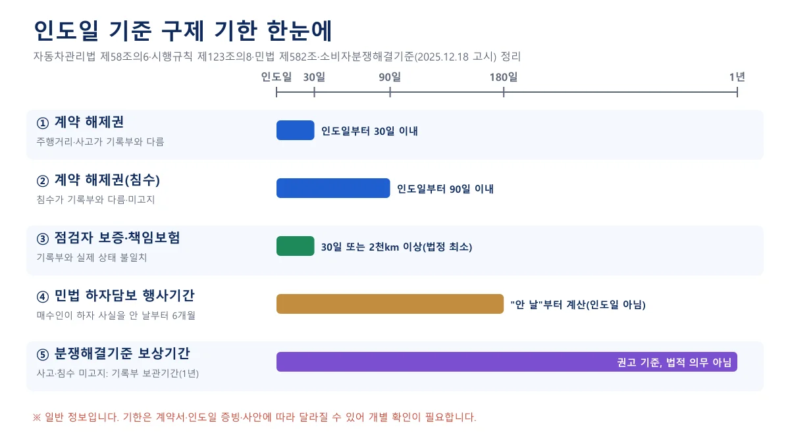
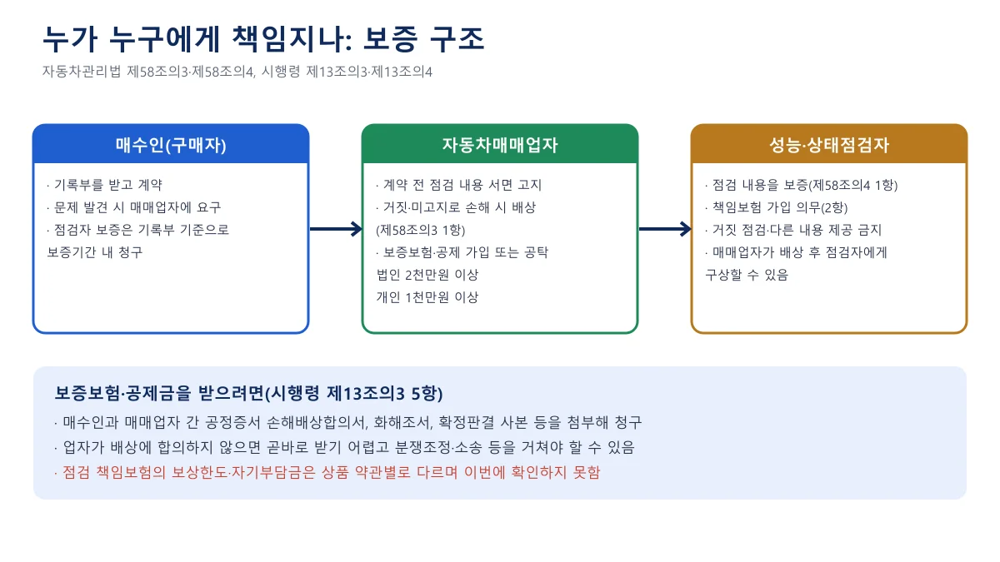
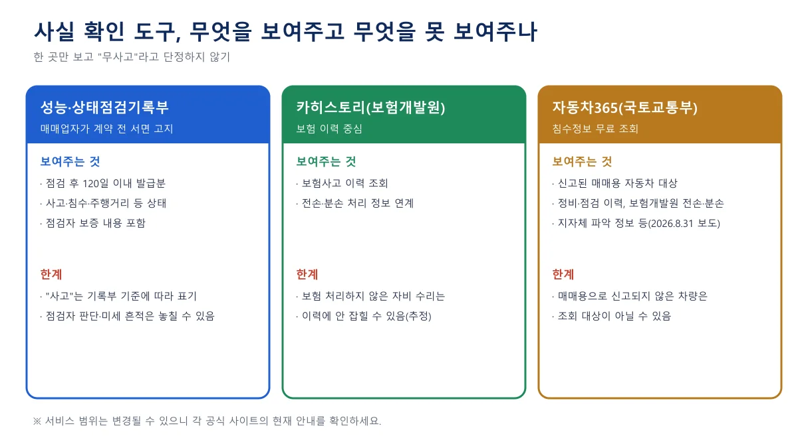
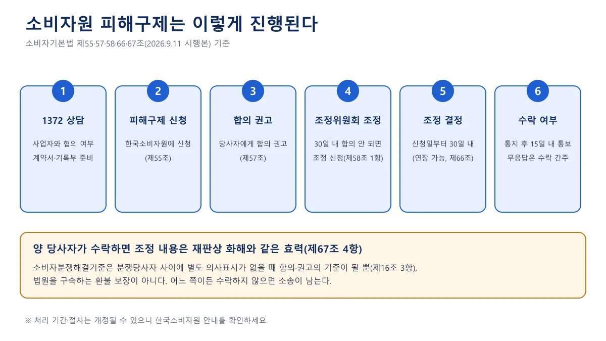
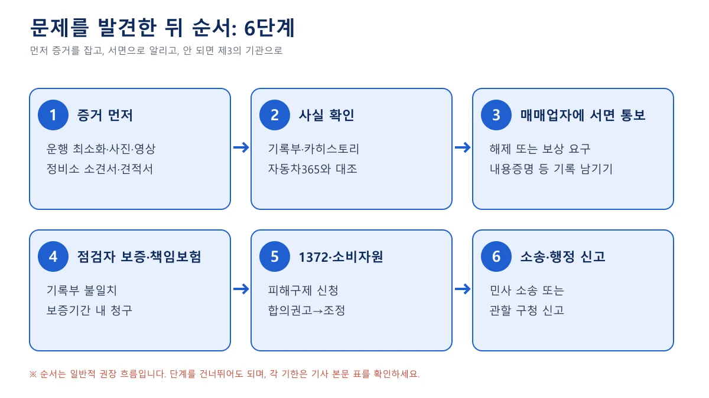
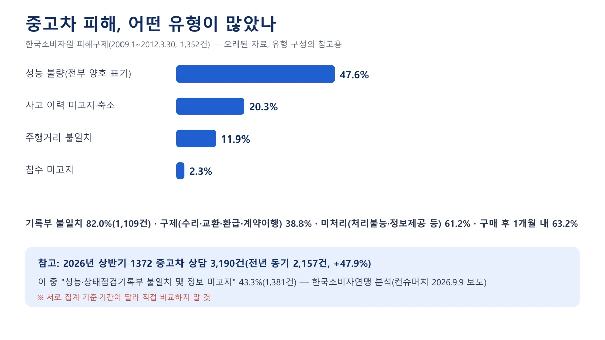
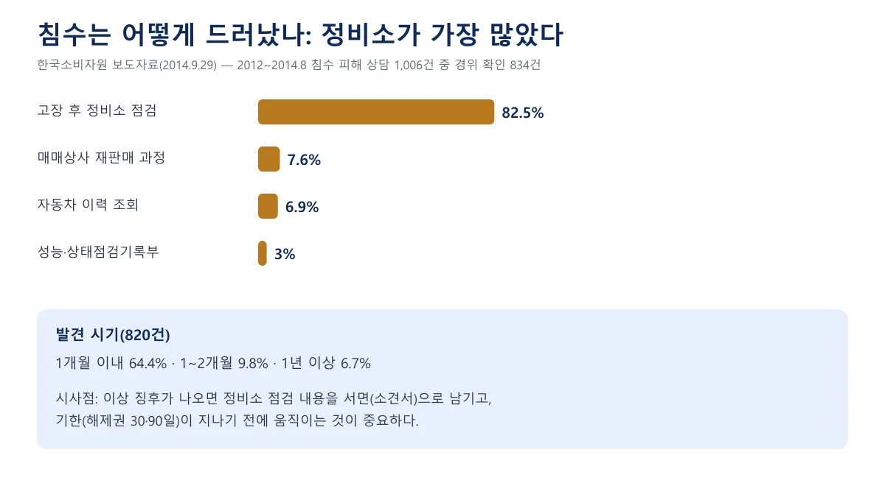

▲ 밤에 촬영한 한국의 자동차 정비소 외관. 침수·사고 흔적은 정비소 점검에서 드러나는 경우가 많다(한국소비자원 2014년 침수 피해 분석) ⓒ Kwangmo / Wikimedia Commons (CC0)
"중고차를 샀는데 사고 이력이 있었다면, 돈을 돌려받을 수 있을까?" 점검기록부에는 '무사고'라고 적혀 있었고 계약서에도 도장을 찍었는데, 정비소에서 "여기 용접 자국이 있네요"라는 말을 들었을 때 가장 먼저 드는 생각이다. 이럴 때 구제 수단이 하나가 아니고, 수단마다 기한이 짧고 서로 다르다는 점이 핵심이다.
이 글은 자동차관리법과 시행령·시행규칙, 소비자기본법, 공정거래위원회 고시 소비자분쟁해결기준의 현행 조문을 직접 확인해 "구매 후 문제가 드러났을 때"의 순서를 정리했다. 기록부를 읽는 법은 별도 기사에, 신차 교환·환불은 신차 교환·환불 기사에 있어 여기서는 반복하지 않는다. 일반 정보이며 법률 자문이 아니고, 환불을 보장하는 글도 아니다. 실제 사건은 변호사·소비자원 상담으로 확인해야 한다.
1. 구제 수단은 세 겹이고, 기한이 각각 다르다
중고차 피해를 한 줄로 "환불받을 수 있나요?"라고 묻기 쉽지만, 법은 해제, 손해배상, 보증·보험이라는 세 가지 길을 따로 둔다. 어느 길을 쓰느냐에 따라 받을 수 있는 것이 '차값 전액'일 수도, '수리비'일 수도 있다.
| 수단 | 누구에게 | 받을 수 있는 것 | 기한·한계 |
|---|---|---|---|
| 계약 해제(제58조의6) | 자동차매매업자 | 차량 반환과 동시에 매매대금 반환 | 사고·주행거리 30일, 침수 90일. 기록부 고지와 다를 때만 |
| 손해배상(제58조의3) | 자동차매매업자(점검자에 구상 가능) | 재산상 손해 배상 | 고지 누락·거짓 고지가 있어야 하고 손해 입증 필요. 보증보험금은 합의서·판결 등 필요 |
| 점검자 보증·책임보험(제58조의4) | 성능·상태점검자(보험사) | 무상수리 또는 수리비 보상 | 보증범위는 인도일부터 30일 이상 또는 2천km 이상(먼저 도래). 환불이 아님 |
| 민법 하자담보(제580·582조) | 매도인 | 목적 달성 불가 시 해제, 그 외 손해배상 | 하자를 안 날부터 6개월. 매수인이 알았거나 과실로 몰랐으면 제외 |

▲ 구제 기한을 인도일 기준 막대로 비교한 도표. 민법 6개월은 '하자를 안 날'부터 센다. 카프리즘 제작
📍 어느 법이 적용되는지부터 가른다
- 매매업자가 팔았거나 알선한 거래: 제58조·제58조의3·제58조의6이 적용된다. 계약서와 기록부에 상사·점검자 정보가 있다
- 개인 간 직거래: 위 조문은 매매업자의 의무를 정한 것이어서 그대로 쓰기 어렵고, 민법 하자담보나 사기 취소(민법 제110조) 같은 민사 다툼이 중심이 된다. 이 글은 이 경우를 세부적으로 다루지 않는다
- 주행거리 조작은 확인 방법과 구제가 따로 있어 별도 기사에서 다룰 예정이다
2. 계약 해제권 — 사고·주행거리 30일, 침수 90일
제58조의6은 2016년 신설된 조항으로, 매수인이 일정 기간 안에 계약 자체를 해제할 수 있게 한다. 조문이 정한 사유와 기한은 아래와 같다.
| 해제 사유 | 기한(자동차 인도일부터) |
|---|---|
| 자동차의 주행거리·사고 사실이 기록부 고지 내용과 다른 경우 | 30일 이내 |
| 기록부 사항(침수 제외) 또는 압류·저당 등록 여부를 거짓 고지하거나 고지하지 않은 경우 | 30일 이내 |
| 침수 사실이 고지 내용과 다르거나, 침수 사실을 거짓 고지·미고지한 경우 | 90일 이내 |
해제한 매수인은 자동차를 즉시 돌려주고, 매매업자는 반환과 동시에 이미 받은 매매금액을 돌려줘야 한다(제58조의6 제2·3항). 매매업자가 대금을 돌려주지 않으면 이는 시장·군수·구청장의 등록취소·영업정지 사유 목록에도 들어 있다(제66조 제1항). 다만 처분이 곧 내 돈의 반환은 아니라는 점은 6장에서 다시 다룬다.
✅ 해제를 주장하기 전에 확인할 4가지
· 비교 대상은 기록부에 적힌 고지 내용이다. 기록부에 '사고 있음'으로 정직하게 적혀 있었다면 "고지와 다른 경우"가 아니다
· 기록부의 '사고'는 주요 골격 손상을 기준으로 표기한다. 외판 교환만 있는 차를 사고차로 느끼더라도 기록부 기준으로는 다를 수 있다(기록부 읽는 법)
· 인도일이 언제인지 증빙(인수증·출고 사진·문자)을 남긴다. 기한 계산은 초일 산입 등으로 다툼이 생길 수 있어 여유를 두고 서면으로 통지하는 편이 안전해 보인다
· 업자가 거부해도 기한 안에 해제 의사를 서면으로 남겨 두면 이후 분쟁에서 다툼을 줄일 수 있다(법적 효과는 사안별 확인 필요)
가장 흔한 오해는 "사고 났으면 무조건 환불"이다. 이 조항은 기록부 고지와 실제가 다른 경우에만 열리고, 기한도 30일·90일로 짧다. 한편 정부가 2026년 8월 발표한 '7일 환불제' 대책은 요건이 다르므로 별도 기사에서 따로 봐야 하며, 이 글은 현행 법 조문만 기준으로 한다.
3. 점검자 보증과 책임보험 — 수리비 보상이 중심이다
해제 기한이 지났거나 해제까지는 원하지 않을 때는 점검 내용에 대한 보증이 있다. 자동차관리법 제58조의4는 성능·상태점검자가 점검 내용을 보증하고 보증에 책임을 지는 보험에 가입해야 한다고 정한다. 시행규칙 제123조의8은 그 보증범위를 인도일부터 30일 이상 또는 주행거리 2천km 이상으로 하라고 한다. 소비자분쟁해결기준은 이를 "그 중 먼저 도래한 것"으로 적용한다고 비고에 쓴다.

▲ 책임 구조 도표. 보증보험금을 받으려면 공정증서 합의서·화해조서·확정판결 등이 필요하다(시행령 제13조의3). 카프리즘 제작
손해배상 쪽에는 매매업자가 미리 가입해 두는 보증보험·공제·공탁이 있다. 시행령 제13조의3 제1항은 그 보장 금액을 법인 2천만 원 이상, 법인이 아니면 1천만 원 이상으로 정한다. 법정 최소 금액이어서 피해액이 이보다 크면 이 범위를 넘는 부분은 업자에게 직접 청구해야 한다(해석상 추정이며 개별 약관 확인 필요).
숫자는 법정 최소라는 점을 기억하자. 계약서나 보증서에 더 긴 기간이 적혀 있다면 그쪽이 유리하다. 반대로 하루에 약 67km 이상 달리면 30일이 되기 전에 2천km에 먼저 닿는다(2,000km ÷ 30일). 장거리 통근을 한다면 실제 보증 기간은 한 달보다 짧아질 수 있다.
| 구분 | 확인된 내용 | 확인하지 못한 내용 |
|---|---|---|
| 가입 의무 | 점검자는 책임보험에 가입해야 한다(법 제58조의4, 시행령 제13조의4) | 보험사별 상품 구조 |
| 보장 대상 | 종합 상태, 사고·교환·수리 등 이력, 세부 상태 중 국토교통부장관이 고시한 사항(시행령 제13조의4) | 고시 항목의 전체 목록 |
| 보상 제외 | 고의 사고, 주행거리·연식 기준 등을 약관에 명확히 정해야 함 | 구체적 제외 조건 |
| 보상 형태 | 분쟁해결기준상 무상수리 또는 수리비 보상 | 환불 여부는 기준에 포함되지 않음 |
| 한도·자기부담금 | 약관에 명확히 정할 것을 시행령이 요구 | 금액은 확인하지 못함 |
한국자동차진단보증협회(KAIWA) 안내에는 기록부와 실제 상태가 다를 때 원인이 점검자의 고의 또는 과실이어야 하고, 이 경우 무상수리·부품 교환·보상비율에 따른 금액 보상이 제공된다고 적혀 있다. 청구 절차와 보상한도는 해당 페이지에 없었다. KAIWA 성능점검 안내 바로가기
4. 사실 확인 — 한 곳만 보지 말고 교차한다
문제가 드러났다고 곧바로 업자에게 "사고차였다"고 주장하면 근거 싸움이 된다. 먼저 사실 확인 도구가 무엇을 보여주는지 알아야 한다.

▲ 사실 확인 도구별 범위와 한계 도표. 서비스 범위는 변경될 수 있다. 카프리즘 제작
- 카히스토리(보험개발원 계열 자동차 이력 서비스): 한국소비자원은 침수차 주의 보도자료에서 보험업계 자동차 이력 사이트(carhistory.or.kr) 확인을 권했다. 보험 처리와 연계된 이력이 중심이므로 자비로 수리한 사고는 잡히지 않을 수 있다(추정) 카히스토리 바로가기
- 자동차365 침수정보 조회: SBS Biz(2026년 8월 31일 보도)에 따르면 자동차번호로 무료 침수 이력을 확인할 수 있고, 대상은 자동차매매업자가 소유한 신고된 매매용 자동차다. 정비 이력, 점검 이력, 보험개발원 전손·분손 정보, 지자체가 파악한 정보 등을 모아 보여주며 올해뿐 아니라 과거 침수 이력도 조회된다고 한다 자동차365 바로가기
- 기록부 사본: 시행규칙 제120조는 매매업자가 기록부 사본을 발급일부터 1년간 보관하도록 정한다. 내 사본이 없어도 요구할 근거가 된다
- 정비소 소견서: 한국소비자원이 2012~2014년 8월 침수 중고차 상담 1,006건 가운데 발견 경로를 확인할 수 있는 834건을 분석한 결과 82.5%(688건)가 고장 후 정비소 점검에서 드러났다. 정비소에서 "이상 흔적이 있다"고 하면 말로 끝내지 말고 서면과 사진을 요청하자
이 도구들은 어느 하나로 "사고 없음"을 증명하지 못한다. 반대로 이력에 사고가 보이는데 기록부에는 없다면 불일치를 주장할 수 있는 정황이 된다. 침수 확인법 자체는 침수차 판별 기사에 있다.
5. 한국소비자원과 소비자분쟁해결기준 — 기준표에 실제로 적힌 것
업자가 응하지 않으면 다음 선택지는 1372 소비자상담센터와 한국소비자원 피해구제다. 소비자기본법 제55조는 소비자가 피해구제를 한국소비자원에 신청할 수 있다고 정한다.
공정거래위원회 고시 소비자분쟁해결기준(2025년 12월 18일 시행본)의 '중고자동차매매업' 표에는 구매 후 문제와 관련해 다음 항목들이 있다. 아래는 고시 원문 표를 줄여 옮긴 것이다(주행거리 행의 비고만 이 글의 안내로 바꿨다).
| 분쟁 유형 | 해결기준 | 비고(고시 원문) |
|---|---|---|
| 보증기간 이내에 기록부 기재 내용과 실제 성능·상태가 다르거나 하자가 발생 | 무상수리 또는 수리비 보상 | 보증기간은 개별 약정에 따르되 30일 이상, 2천km 이상이어야 하며 먼저 도래한 것을 적용 |
| 기록부를 교부하지 않은 상태에서 하자 발생 | 무상수리 또는 수리비 보상 | - |
| 사고 또는 침수 사실을 고지하지 않은 경우 | 구입가 환급 또는 손해배상 | 보상기간은 자동차관리법상 기록부 보관기간(1년) |
| 주행거리 조작 | 해약 또는 주행거리 조작에 따른 손해배상 | 세부 확인법은 별도 기사에서 다룰 예정 |
| 판매업자가 일방적으로 계약의 해제를 요구 | 계약금의 2배액 보상 | - |
| 자격 없는 자 또는 점검장 이외 장소에서 점검받은 기록부 교부 후 하자 발생 | 무상수리 또는 수리비 보상 | 자격 없는 자는 자동차관리법 제66조 제1항 각호 해당자 |
📍 이 표를 읽는 법
- 소비자기본법 제16조 제3항은 해결기준을 분쟁당사자 사이에 별도 의사표시가 없는 경우에만 합의 또는 권고의 기준으로 삼는다고 정한다. 계약서에 다른 약정이 있으면 그쪽이 우선할 수 있다
- "사고·침수 미고지 = 구입가 환급 또는 손해배상"은 매매업자가 고지하지 않은 사실을 입증해야 가능하다. 그리고 보상기간 1년은 기록부 보관기간을 따른 것이다
- 이 표는 권고적 기준이어서 업자가 거부하면 강제할 수 없다. 이때 조정이나 소송이 이어진다

▲ 소비자원 피해구제와 분쟁조정 절차(소비자기본법 시행 2026.9.11 조문 기준). 카프리즘 제작
현행 소비자기본법(2026년 3월 10일 개정, 9월 11일 시행) 제58조는 피해구제 신청을 받은 날부터 30일 안에 합의가 이루어지지 않으면 원장이 지체 없이 소비자분쟁조정위원회에 조정을 신청하도록 정한다. 원장은 원인 규명에 상당한 시일이 필요한 사건에 한해 처리기간을 60일 이내에서 연장할 수 있다(제58조 제2항, 2026년 3월 개정으로 신설). 조정위원회는 신청일부터 30일 이내에 조정을 마치고(연장 가능), 당사자가 통지 후 15일 이내에 수락하거나 의사표시가 없어 수락한 것으로 보면 재판상 화해와 같은 효력이 생긴다(제66·67조). 반대로 한쪽이 수락하지 않으면 소송이 남는다.
6. 증거 목록과 신고 경로 — 먼저 모은 사람이 유리하다
해제든 손해배상이든 소비자원 조정이든 마지막에 묻는 것은 같다. "계약할 때 무엇이 고지됐고, 실제로는 무엇이 다른가"를 보여 줄 수 있느냐다.
✅ 지금 바로 보관할 증거 10가지
· 성능·상태점검기록부 원본(계약 전 받은 것)과 사진·캡처
· 매매계약서, 특약 문구, 보증서·책임보험 안내문(보증기간·연락처)
· 인수증·출고 시 주행거리 계기판 사진, 인도일이 드러나는 문자·결제 기록
· 온라인 광고 화면(사고 없음·무사고 문구)과 판매원과의 문자·카카오톡 대화
· 문제를 발견한 날짜와 그때 주행거리 메모
· 정비소 진단서·소견서·견적서와 문제 부위 사진·영상
· 카히스토리·자동차365 조회 화면(조회 날짜 포함)
· 업자에게 보낸 해제·보상 요구 서면(내용증명 등)과 회신
· 수리한 경우 영수증과 교체한 부품 사진(분쟁 중에는 원상태 훼손을 피하자)
· 통화는 일시와 내용을 메모하고, 구두 약속은 문자로 한 번 더 확인

▲ 문제 발견 후 대응 순서 도표. 단계는 일반적 권장 흐름이며 상황에 따라 건너뛸 수 있다. 카프리즘 제작
한국소비자원이 2012년 피해예방주의보에서 소비자에게 권한 수칙도 같은 방향이다. 등록된 중고차 매매업소와 관인계약서를 작성해 보관할 것, 구두 약속은 계약서 특약에 적을 것, 기록부 발급일이 120일 이내인지, 품질보증기간(30일 또는 2천km 이내)과 보증 대상 품목이 무엇인지 계약 전에 확인할 것이다. 자율적 분쟁 해결이 어려우면 1372 소비자상담센터에 도움을 요청하라고도 안내했다. 2014년 침수 보도자료에서는 침수차로 확인되면 "100% 환불" 같은 특약을 계약서에 적어 두라고 권했다(특약의 효력은 문구와 사안에 따라 다를 수 있다).
행정·형사 경로는 '내 돈 반환'과 별개다
- 행정 신고: 자동차매매업 등록을 관리하는 시장·군수·구청장은 제66조에 따라 등록을 취소하거나 6개월 이내 사업정지를 명할 수 있다. 특히 고의 또는 과실로 침수 사실을 고지하지 않거나 거짓 고지한 경우는 등록을 취소해야 한다고 조문에 적혀 있다
- 형사 처벌: 제80조는 침수 사실·성능 상태 점검 내용 또는 압류·저당 등록 여부를 고지하지 않거나 거짓으로 고지한 자와, 거짓으로 점검하거나 실제와 다른 내용을 제공한 점검자를 2년 이하 징역 또는 2천만 원 이하 벌금으로 처벌한다고 정한다
- 다만 업자가 처분을 받아도 내 매매대금이 자동으로 돌아오지는 않는다. 환급은 별도 합의·조정·판결로 정해진다
- 매매사업조합이나 서울시 같은 지자체 창구의 분쟁 처리 절차는 이번에 공식 자료로 확인하지 못했다. 시행규칙 제120조 제4항에 따라 인터넷 광고에는 매매사업조합 상호·주소·전화번호가 표시돼야 하므로 연락처는 광고와 계약서에서 확인할 수 있다
7. 시간이 지나면 왜 어려워지나
한국소비자원은 2009년 1월부터 2012년 3월까지 접수한 중고차 피해 1,352건에서 82.0%(1,109건)가 기록부와 실제 상태가 다르다는 불만이었고(점검 결과는 모두 양호로 표기됐으나 성능이 불량한 경우 47.6%, 사고 미고지·축소 20.3%, 주행거리 차이 11.9%), 63.2%(854건)가 구매 후 1개월 안에 발생했다고 밝혔다. 같은 자료에서 수리·교환·환급·계약이행 등 배상을 받은 비율은 38.8%(525건)였고, 나머지 61.2%(827건)는 소비자원이 '미처리'(처리불능·정보제공 등)로 분류했다. 미처리가 모두 피해를 끝내 못 구제했다는 뜻은 아니다. 10년이 넘은 통계라 오늘의 비율로 읽으면 안 되지만, 초기에 움직여야 하는 이유를 보여 준다.

▲ 소비자원 2012년 자료의 피해 유형과 2026년 상반기 상담 동향. 두 자료는 기간과 집계 기준이 달라 직접 비교할 수 없다. 카프리즘 제작
2026년 상반기에는 한국소비자연맹이 1372 상담을 분석해 중고차 상담이 3,190건으로 전년 동기 2,157건보다 47.9% 늘었고, '성능·상태점검기록부 불일치 및 정보 미고지'가 43.3%(1,381건)로 가장 많았다고 컨슈머치가 2026년 9월 9일 보도했다. 이 수치는 2차 보도여서 원자료를 확인하지 못했다.
- 해제 기한이 닫힌다: 사고·주행거리는 30일, 침수는 90일이다. 인도 한 달 뒤에는 해제 대신 손해배상 입증으로 넘어가야 한다
- 보증 기간이 닫힌다: 30일 또는 2천km 중 먼저 도래한 쪽이다. 주행하면 거리가 쌓이고 증거가 다른 정비로 덮일 수 있다
- 인과관계가 흐려진다: 몇 달 탄 차의 고장이 '원래 있던 하자'인지 '운행 중 생긴 문제'인지 다투게 된다
- 기록 보관기간이 끝난다: 매매업자의 기록부 사본 보관은 1년이고, 분쟁해결기준의 사고·침수 미고지 보상기간도 같은 1년이다
- 민법 기한도 있다: 하자담보 권리는 매수인이 사실을 안 날부터 6개월 안에 행사해야 한다(제582조). 6개월은 '인도일'이 아니라 '안 날' 기준이다

▲ 침수 피해가 발견된 경로(한국소비자원 2014년 9월 보도자료, 2012~2014.8). 정비소 점검에서 가장 많이 드러났다. 카프리즘 제작
이상 증상이 나왔다면 기한부터 계산하고, 기한이 얼마 남지 않았다면 증거 정리보다 서면 통지를 먼저 하는 편이 안전하다. 그리고 며칠이라도 지난 경우에는 어느 기한이 아직 열려 있는지를 본다.
8. 신차 레몬법과 무엇이 다른가
신차에는 흔히 '한국형 레몬법'으로 불리는 교환·환불 중재 제도가 있지만, 중고차 구제와는 구조가 다르다. 아래 표는 두 제도의 차이를 한 번에 비교한 것이다. 신차 쪽 세부 요건은 신차 교환·환불 기사가 다룬다.
| 구분 | 신차 교환·환불(중재) | 중고차 구제 |
|---|---|---|
| 핵심 질문 | 같은 하자를 몇 번 수리했는데도 재발하나 | 기록부에 고지된 내용과 실제가 같은가 |
| 기준 기간 | 인도 후 1년·2만km, 수리 횟수 | 해제 30일(침수 90일), 보증 30일·2천km 이상 |
| 중심 기관 | 자동차안전·하자심의위원회(중재) | 매매업자·점검자 책임, 소비자원 분쟁조정 |
| 받는 결과 | 교환 또는 환불 | 해제(대금 반환), 손해배상, 수리비 보상 등 |
| 중고차에 적용? | 신차 전용 | - |
정리하면 신차는 "고장이 반복되는가", 중고차는 "고지와 실제가 다른가"가 출발점이다. 그래서 중고차는 계약 전 기록부 사본, 광고 화면, 판매원 문자 같은 구매 시점의 증거가 구제의 대부분을 좌우한다.
📍 이번에 확인하지 못한 것
- 점검 책임보험의 보상한도·자기부담금·청구서류: 공식 약관이나 고시 전문을 확인하지 못했다
- 고시된 책임보험 보장 항목: 국토교통부 고시 목록은 확인하지 못했다
- 매매사업조합·지자체 창구의 분쟁 처리 절차와 서울시 개별 지침
- 제58조의6 해제권의 실제 분쟁 사례와 법원 판단: 조문 기준으로만 설명했고, 기한 계산(초일 산입 등)은 사안별로 달라질 수 있다
- 컨슈머치의 2026년 상반기 상담 수치는 2차 보도이며 원자료는 확인하지 못했다. 소비자원 통계(2012·2014)는 오래된 자료다
9. 요약
중고차를 매매업자에게 샀는데 주행거리·사고가 기록부 고지와 다르면 인도일부터 30일 이내, 침수가 다르면 90일 이내에 계약 해제를 할 수 있다(자동차관리법 제58조의6, 시행 2026년 10월 2일 기준). 해제하면 차를 즉시 돌려주고 대금은 동시에 돌려받는 구조이며, 기록부에 정직하게 적힌 내용이나 개인 직거래에는 그대로 적용하기 어렵다.
해제 기한이 지나면 매매업자의 손해배상(제58조의3), 점검자 보증·책임보험(법정 최소 30일 또는 2천km 이상, 보상은 주로 수리비), 한국소비자원 피해구제와 분쟁조정, 민법 하자담보(안 날부터 6개월)가 남는다. 소비자분쟁해결기준은 사고·침수 미고지에 구입가 환급 또는 손해배상을 정하지만 권고적 기준이다.
기록부·계약서·광고 화면·판매원 대화, 인도일 증빙, 정비소 소견서와 카히스토리·자동차365 조회 화면을 먼저 보관하고, 업자에게는 기한 안에 서면으로 알리자. 책임보험 보상한도 등 일부는 확인하지 못했고, 이 글은 일반 정보이므로 실제 분쟁은 1372나 전문가에게 확인해야 한다.